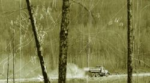
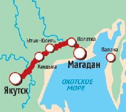
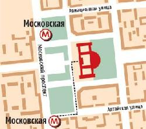
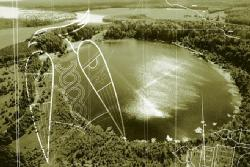
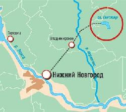
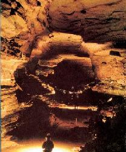
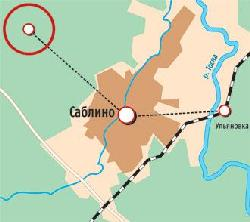
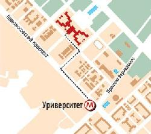

Если кто хочет пощекотать себе нервы, то предлагаю вам несколько географических объектов на карте России.
Говорят, что эти места странные и нехорошие. Как раз для любителей острых ощущений.

Восточная Сибирь. Федеральная трасса «Колыма».
Это то самое место, про которое говорят: «Уж лучше вы к нам!». Колыма. А точнее, колымский тракт: ледяная дорога (более 2 000 км), соединяющая Магадан и Якутск. Два не самых приятных места на Земле. Рекорды холода бьются именно здесь – температура периодически опускается до – 70 градусов по Цельсию. А геологи, антропологи и парапсихологи бьются в поисках объяснений фокусам, которые временами преподносят местные озера, горы, деревья, звери, да и сама трасса.
В годы репрессий по колымскому тракту прошел миллион советских заключенных. Половина там и осталась. Местные старожилы помнят, как обледеневшие трупы валялись вдоль дороги. Враги народа, уголовники и взяточники служили естественным уплотнителем грунтового покрытия тракта. Погибших если и хоронили (в теплое время года), то тут же – на обочине. Не удивляйся, когда тебе предложат «порадовать костлявых» (т.е. заняться поиском человеческих останков в земле). Здесь это что-то вроде спорта и гадания одновременно: нашел тазобедренную кость – к деньгам, ребро – к тихому семейному счастью, череп – к повышению по службе. В нескольких местах (в районе Якутска и Хандыги) шоссе поддерживается только паромными (летом) или ледовыми (зимой) переправами и не работает в межсезонье. Три-четыре автомобиля в сутки – по местным меркам такое движение считается интенсивным. В этих условиях любая поломка может оказаться роковой и для машины, и для ее хозяина. Летом из-под снега выступают обгоревшие железные скелеты: водители поджигают свои автомобили, чтобы согреться в 50 – 60-градусный мороз. Иногда это не помогает – и неподалеку от остова машины находят ее хозяина.

На автомобиле от Магадана на северо-запад.
Впрочем, местные жители считают, что экстремальные климатические условия и атмосфера гигантского кладбища – не самое страшное из того, что есть на Колыме. Настоящие приключения начинаются на озерах. На Красном, Лабынкыре и Воротах за последнее десятилетие пропало более сотни человек. Якуты говорят, что в бездонных местах скрывается огромное животное. Кроме того на Лабынкыре есть три острова, исчезающие под водой с непонятной закономерностью. Местные уверены, что острова на самом деле – части монстра, который уходит на дно после каждой удачной охоты.
Санкт-Петербург. ЦНПО «Ленинец».
«Ты лучше ночью здесь не броди. Особенно вниз не сходи – там как пробежит, шарахнет копытом… Был у нас один такой, резвый. На спор ночь хотел проспать в подвале... Еле ноги унес. Потом толком ничего и рассказать не мог. У него с той ночи виски больно много поседели…» Валерий Васильевич, ночной сторож НИИ радиоэлектроники ЦНПО «Ленинец», всем рассказывает одно и то же: не обследованные диггерами подвалы в центре Питера населяют оборотни. Эти полулюди-полукони носятся по подземному ночному городу, но под утро всегда возвращаются домой – в подвалы НИИ.
Кентавры, конечно, относятся к мифологии, чего нельзя сказать о советских опытах в области генетики. Еще в 20-х годах в Ленинграде была организована спецлаборатория, задачей которой, говоря современным языком, была расшифровка генома человека. В 30-х лаборатория была расформирована и персонал вроде бы отправился в Сибирь. Это – официальная и общеизвестная версия бесславного конца первых «протогенетиков» СССР. Но по другим данным (Сборник документов «Совершенно секретно. Лубянка – Сталину. 1922–1934 гг.» Москва, 2001) ни один ученый не был сослан. На базе секретной спецлаборатории была создана еще более секретная спецлаборатория, находящаяся в прямом подчинении НКВД.

Санкт-Петербург, Московский пр., 212.
О ее деятельности информации немного: располагалась она как раз в здании ЦНПО «Ленинец», находилась под личным руководством Берии, якобы проводились здесь опыты по скрещиванию людей, крыс, собак, лошадей, рыб и прочих представителей животного мира, вроде бы ежегодно (вплоть до 70-х гг.) на стол руководителей государства ложился секретный доклад об успехах советской генетической мысли. До последнего времени казалось, что этих «вроде бы» совершенно недостаточно, чтобы поверить в рассказы сторожа дяди Валеры. Но в начале 1999 года были обнародованы документы, согласно которым ежегодно (в течение 30–50-х гг.) в спецотдел ленинградского НКВД (а затем МГБ и КГБ) направлялось около 200 заключенных «для проведения целостного анализа физиологического и психического состояния и выработки методики коррекции выявленных нарушений». Сюда же свозили больных или раненых животных из ближайших колхозов и совхозов.
Так что вполне вероятно, что, войдя в доверие к Валерию Васильевичу, ты сможешь провести незабываемую ночь в Питере и, если повезет, обзавестись импозантными седыми висками.

Нижегородская область. Озеро Светлояр. Китеж.
Ни российская историческая мысль, ни православная теология на вопрос «откуда есть пошла земля русская» так толком и не ответили. Зато точно известно, «куда есть ушла земля русская». Под воду. Утонула еще в XIII веке. Чтобы ее найти, рекомендуется нырять в озеро Светлояр, цель – «Подводное Царство Китеж».
В 1237 году, когда татарская нечисть выжигала святую Русь, некий предатель указал интервентам дорогу к Китежу. Город находился в труднодоступной болотистой местности, поэтому туда стекались беженцы в надежде, что захватчики пройдут стороной. Монголы нашли город, осадили его и несколько дней штурмовали китежские стены. Вот тут-то и приключилось мистическое и непознанное. Когда стало ясно, что город будет взят, все его жители закрылись в многочисленных церквях и взмолились о спасении.
Летопись говорит, что чудо состоялось. На глазах изумленных вражеских воинов Китеж исчез – под водой скрылись его церкви, башни, терема. Там, где только что стоял Китеж, возникло озеро Светлояр. С тех пор из-под воды доносятся колокольные перезвоны, церковные песнопения, щебетание птиц, лай собак и тому подобные спецэффекты.
С легендой о Китеже по сей день связана вера в существование на земле русской духовно-мистического центра, противостоящего Антихристу и всякому злу.
Одним из первых документов, рассказывающих о путешествии в зачарованное место, было письмо некоего солдата, датированное 1702 годом. Родные считали его погибшим, но, как следует из послания, он все это время жил в Большом Китеже. В письме солдат рассказывает о религиозных практиках святых обитателей города: «Каждую ночь их молитвы поднимались в небо огненными столпами, и при этом свете можно было свободно читать и писать».

От Нижнего Новгорода на попутке до села Владимирского Воскресенского района.
Первая археологическая экспедиция к озеру была организована в 1968 году. Именно тогда геолог В. Никишин установил, что Светлояр образовалось на месте провала земной коры. Аквалангисты и гидрологи обнаружили, что дно водоема состоит из трех уровней, расположенных на разной глубине: 9,23 и 31 м. Анализ поднятых со дна пород позволил определить, что самая глубоководная часть провала возникла 1 500 лет назад, вторая – 700 лет назад, третья – 400. Таким образом, ученые подтвердили, что в XIII веке здесь произошел серьезный природный катаклизм. Кроме того, они обнаружили на дне остатки цивилизации – черепки и костяшки.
Несмотря на все твои грехи, у тебя есть совсем неплохой шанс «услышать и узреть». Говорят, что каждый, кто проведет вблизи озера два-три месяца, получает свою порцию святости. Кто видит колонну монахов, шагающих по воде ночью, кто – среднерусских красавиц в кокошниках, пляшущих днем посреди озера. Члены общины «Китеж» (более двадцати постоянно проживающих здесь человек) могут рассказать еще десятки подобных случаев-видений. Куда там Кастанеде с его мескалином.

Ленинградская область. Саблинские пещеры.
Саблинские пещеры долгое время оставались одним из самых засекреченных объектов страны. В конце 70-х в ЦК КПСС чуть ли не ежемесячно обсуждали положение дел в Саблино. И хотя у каждого пещерного входа-выхода и не стоял часовой, Саблино считалось полузакрытой территорией. Туда не пускали иностранцев, да и местные жители знали, что появление в районе грозит неприятностями. О Саблино не говорили по радио, не писали газеты, не рассказывало телевидение.
В то время в катакомбах скрывались беглые заключенные и прочие несознательные элементы. Ежегодно правоохранительные органы рапортовали об исчезновении в этих местах около десятка человек. Естественно, вина возлагалась на пещерных бандитов. Но практически все операции по их обезвреживанию, поимке или ликвидации заканчивались ничем. Саблинские пещеры – это растянувшиеся на десятки километров запутанные лабиринты с озерами и обширными залами. Протяженность одной только катакомбы Береговой на настоящий момент превышает 7 км (высота потолков – 160–180 см, в залах – выше 5 м). Так что найти там кого-либо – задача почти невыполнимая.
Однако сами дети подземелья считали, что истинной причиной пропажи людей было воздействие некой потусторонней силы. Бытовала легенда о том, что планета таким образом защищает себя – образует притягательные для посещения подземные коридоры и пещеры, а затем попросту заглатывает представителей ненавистной человеческой расы. Себя пещерные люди причисляли к страдающей части этой самой расы. И потому предполагали, что к ним планета относится благосклонно – в пещерах они чувствовали себя в безопасности.
В этом была доля правды. Ученые утверждают, что разветвленная пещерная система возникла в результате разработок кварцевого песка, которые велись в этом районе в период с конца XVII по начало XX века. В 1922 году отсюда ушел последний рабочий, и пещеры зажили собственной жизнью. За два-три десятилетия активные подземные воды изменили структуру песчаной почвы. Многие спелеологи, побывавшие в Саблино, говорят о феномене подземных «зыбучих песков» или «песчаных болот», как о главной таящейся здесь опасности. Они предполагают, что смесь воды и песка могла стать причиной исчезновения людей: любопытных путешественников просто засасывало. А селившиеся здесь «пострадавшие» оставались живы благодаря тому, что изначально выбирали малодоступные, но уже изученные места. Ведь они попадали сюда по приглашению той или иной общины, члены которой пользовались только проверенными ходами.
Алексей Гуревич, член группы «Пилигримы»:
— Мало кто вспоминает о тех временах сейчас. Хотя это было чем-то совершенно удивительным. Несколько десятков человек обитали в подземелье, читали философские трактаты, размышляли о перспективах новой революции… Иногда кто-то бесследно исчезал. Поначалу все списывали на милицию или спецслужбы, но вскоре стало ясно, что это не так. Когда пропал один из руководителей группы, поползли слухи о какой-то силе, которая якобы уничтожает все живое на своем пути. Что это было – я не знаю. Одни говорили о существах, живущих под землей, другие о грядущих катаклизмах и «планетарной самообороне». Как будто Земля реагирует на человеческую деятельность…
Это и стало основным фактором того, что почти все «подземельники» ушли оттуда…

На электричке – с Московского вокзала Санкт-Петербурга до станции Саблино, расположенной в поселке Ульяновка (40 км от Санкт-Петербурга). Затем на автобусе или маршрутке до Саблинских пещер.
В подземных лабиринтах Саблина в 80-х годах обитало около 200 человек. Они называли себя диссидентами или «политическими» и образовывали отряды, сообщавшиеся друг с другом под землей. Вот лишь некоторые названия команд: «Бяки», «Гранды», «Эдельвейсы», «Атасы», «Садисты», «Валы», «Пилигримы», «Летучие мыши», «Камикадзе».
В настоящее время о действующих подземных группировках ничего не известно. Но люди продолжают пропадать здесь почти так же часто, как и раньше… Кстати, экскурсионная прогулка по катакомбам (в безопасной их части) обойдется тебе всего в 550 рублей.
В столице есть не только нехорошие квартиры, но и целые нехорошие здания. Одно из них – известное всем здание МГУ на Воробьевых горах.
В середине 90-х психически неуравновешенные активисты маргинальной партии «Северный восход» объявили центром «семиугольного московского царства» здание МГУ. После очередного таинства, устроенного «северянами» прямо в холле здания, патруль милиции сопроводил нескольких находившихся в экстатическом состоянии человек в отделение, а оттуда прямиком в психушку.
Выбор главной высотки Москвы в качестве места шабаша был не случаен. До начала строительства здесь находилась деревня Воробьево, пользующаяся репутацией всемосковского центра колдунов и магов. Местные истории о летающих головах, ушах и различной нечисти были популярны у народных сказочников еще в конце XIX века. Даже в дневниках авиаконструктора Крылова встречается упоминание о «подмосковном царстве нечистой силы, расположенном в Воробьево». После войны, всего за несколько лет, местность была изменена: на 320 гектарах создано 407 университетских объектов. От деревни не осталось и следа.
В 40–50-х годах, во время строительства, нынешняя территория МГУ была превращена в концлагерь. Возведением университета занимались заключенные. По неофициальным данным, около двух тысяч человек погибло прямо на стройплощадке. Часть из них была здесь же и захоронена. Говорят, сами заключенные замуровывали стукачей прямо в стены. Смерть нескольких тысяч не могла не спровоцировать возникновения разнообразных страшилок среди последующих поколений студентов. Истории о ходячих, летающих, прыгающих мертвецах появились еще в начале 60-х годов.
Кандидат исторических наук Федор Ахтырский: «Звучит бредово, но я сам несколько раз слышал и видел на 15 и 23 этажах нечто очень странное. Какие-то шумы, разговоры, полупрозрачные фигуры…» В конце 90-х группе исследователей всего самого паранормального (под руководством Саркиса Тер-Оганяна) удалось зарегистрировать на высотке МГУ мощные резонансные звуковые выбросы. Что это значит, Саркис не объяснил. Зато сказал следующее: «Мы определили несколько «темных» зон на верхних этажах здания. Интереса ради проверили и другие московские высотки – там все в порядке». Может быть, просто забыли включить свет?

Москва. На метро до станции «Университет», далее пешком.
До сих пор некоторые подвальные помещения и верхние этажи МГУ закрыты для посещений. В советское время комнаты, расположенные в шпиле, принадлежали КГБ и использовались для наружного наблюдения за перемещениями высокопоставленных лиц. Что происходит там сейчас, неизвестно. С самого начала по Москве ходят слухи, что здание МГУ уходит под землю на столько же этажей, на сколько возвышается над ней. Возникли они в 1949 году, когда ежегодник «Советская архитектура» опубликовал план здания. В отличие от остальных высоток, МГУ было изображено только выше уровня земли. Что-то будет, когда г-н Тер-Оганян спустится в подвалы...
{kind=link}
{kind=link}
{kind=link}
{kind=link}
{kind=link}
{kind=link}
{kind=link}
{kind=link}
{kind=link}
{kind=link}
{kind=link}
{kind=link}
{kind=link}
{kind=link}